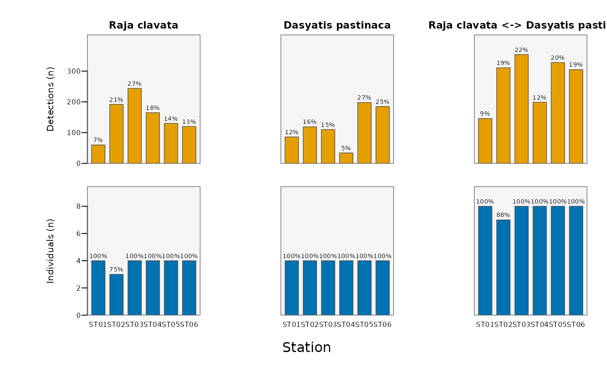

Computes and plots summary statistics across receivers (or any coarser spatial unit
via aggregate.by) from passive acoustic telemetry data, as bar charts. Available statistics are
the number of "detections", the mean within-individual detection share ("average detections"),
the number of unique "individuals", and the number of "co-occurrences" (time-bins where two or
more animals share a location). Data can be split by animal class through id.groups.
Usage
plotStationStats(
data,
id.col = NULL,
timebin.col = NULL,
station.col = NULL,
id.groups = NULL,
group.comparisons = "all",
aggregate.by = NULL,
type = "detections",
value.scale = c("natural", "count", "proportion"),
color.pal = NULL,
background.color = "grey96",
station.labels = c("names", "rotated", "numbered"),
annotate = c("auto", "count", "proportion", "both", "none"),
annot.min = NULL,
main = NULL,
xlab = NULL,
legend = TRUE,
cex = 1,
file = NULL,
width = NULL,
height = NULL,
res = 300,
...
)Arguments
- data
A data frame containing animal detections with corresponding time-bins.
- id.col
Name of the column containing animal IDs. Defaults to
"ID".- timebin.col
Name of the column containing time bins (in POSIXct format). Defaults to
"timebin".- station.col
Name of the column containing station/receiver IDs. Defaults to
"station".- id.groups
Optional named list of ID groups, used to split animals into classes (e.g. species); each becomes a panel column.
- group.comparisons
For co-occurrences with
id.groups:"within"(intra-group),"between"(inter-group pairs) or"all"(both). Defaults to"all".- aggregate.by
Optional column name to summarise by (e.g. habitat or region); defaults to
station.col. Each station must map to a singleaggregate.byvalue.- type
One or more statistics to plot (each drawn in its own panel row):
"detections","average detections","individuals","co-occurrences". Defaults to"detections".- value.scale
What the bar height encodes:
"natural"(default; counts for count-based statistics, a proportion for"average detections"),"count", or"proportion".- color.pal
Fill colours, one per
type. If NULL, a colourblind-safe palette is used.- background.color
Panel background colour. Defaults to "grey96".
- station.labels
How to label locations on the x-axis:
"names"(default),"rotated"(vertical names) or"numbered"(numbers, with a name key drawn in the right margin).- annotate
Bar annotation:
"auto"(default; the quantity the axis does not show),"count","proportion","both"or"none".- annot.min
Optional numeric; hide annotations for bars below this count (reduces clutter).
- main
Optional overall title.
- xlab
Optional x-axis title (defaults to the title-cased
aggregate.byname).- legend
Logical; when
station.labels = "numbered", draw the number-to-name key. Defaults to TRUE.- cex
Global expansion factor for all plot text. Defaults to 1.
- file
Optional output file. If
NULL(the default), the figure is drawn on the current graphics device - the usual interactive behaviour. If a file path is supplied, moby opens a graphics device chosen from the file extension (.pdf,.svg,.png,.jpg/.jpeg,.tif/.tiffor.bmp), draws the figure to it, and closes the device automatically (also if an error occurs). For multi-page or batch workflows, keepfile = NULLand manage the device yourself (e.g.pdf(...); plot...(); dev.off()).- width, height
Output size in inches. Used only when
fileis supplied. IfNULL(default), a size is derived from the figure's structure (e.g. the number of individuals or panels). These defaults are sensible starting points, not guarantees: dense or unusual figures may still need you to setwidth/heightexplicitly. The two can be set independently.- res
Resolution in pixels per inch, for raster formats only (
.png,.jpg,.tif,.bmp); ignored for vector formats (.pdf,.svg). Used only whenfileis supplied. Defaults to 300.- ...
Further arguments passed to
barplot.
Value
Invisibly, a tidy data frame of the plotted statistics (columns series, type,
location, count, proportion).
Details
Each requested type is drawn in its own row of panels with its own axis and unit, so
quantities with different denominators are never conflated on a shared scale. When id.groups is
supplied, each group (and, for co-occurrences, each between-group pair when group.comparisons is
"between"/"all") becomes a column, sharing the per-type y-scale so groups are directly
comparable. Bar height encodes counts for count-based statistics and a proportion for
"average detections" by default (value.scale overrides this); the complementary quantity is shown as
a bar annotation.
The computed statistics are returned invisibly as a tidy data frame, so the plotted numbers are available programmatically.
Note
The layout (margins, the optional numbered-location key) is sized in inch units, so it stays consistent across datasets and graphics devices.
Examples
# number of detections and of unique individuals per receiver
plotStationStats(rays, type = c("detections", "individuals"))
#> Warning: - 'id.col' converted to factor.
#> Warning: - Converting 'station.col' to factor.
#>
#> Station statistics
#> ------------------------------------------------------
#> Statistics: detections, individuals
#> Aggregate: station (6 levels)
#> Individuals: 8
#> Groups: 2 (all -> 3 series)
#> Bar height: counts (share for avg. detections)
#> ------------------------------------------------------
